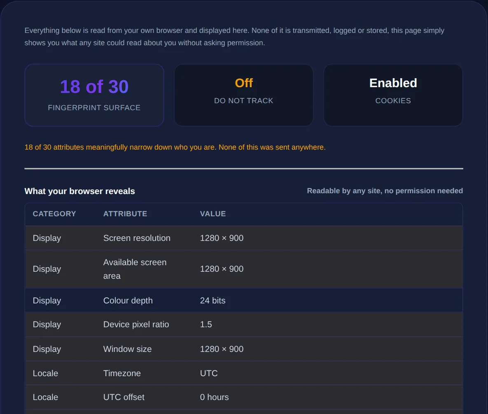

How to Check What a Website Can Learn About You
The surprising amount your browser reveals automatically, how fingerprinting works, and practical steps to reduce your exposure.
By Mubasher Hussain · Published 2026-07-31 · Updated 2026-09-01 · 1091 words · about 5 minute read
Every time you visit a website, your browser hands over a surprising amount of information automatically, before you click anything or fill in a single field. Your approximate location, your device and operating system, your browser and its settings, and even a distinctive combination of characteristics that can identify you across sites. The Privacy Checker shows you, in your browser, much of what a site can see, and this article explains what is exposed and how to reduce it.
Understanding what leaks automatically is the first step to controlling it. Most people are unaware just how much their browser reveals by default, and how that information can be combined to track them even without cookies.
What your browser reveals automatically
A basic web request already carries a lot. Your IP address reveals your approximate geographic location and your internet provider. The user-agent string announces your browser, its version and your operating system. Beyond that, a page running JavaScript can read your screen resolution, time zone, language, installed fonts, graphics capabilities and more. None of this requires your permission, it is simply available to any page you load. Individually these details seem harmless, but together they paint a detailed picture of your device and, potentially, of you.

How browser fingerprinting works
The most eye-opening privacy concept is fingerprinting. On its own, each characteristic your browser exposes, screen size, fonts, time zone, graphics rendering quirks, is shared by many people. But the specific combination of all of them is often unique, or nearly so, which means a site can generate a distinctive "fingerprint" that identifies your browser without any cookies at all. Because it needs no stored data, fingerprinting can track you even when you clear cookies or use private browsing, which is exactly why it has become a favoured tracking technique. Seeing your own fingerprint's rarity is a striking demonstration of how identifiable a browser can be.
Clearing cookies and using private mode stops cookie-based tracking but not fingerprinting, which identifies you from your browser's characteristics themselves. True privacy requires making your fingerprint less distinctive, not just deleting stored data.
Cookies, tracking and the bigger picture
Alongside fingerprinting, the older mechanism of tracking cookies still operates widely. Third-party scripts embedded across many sites, analytics, ad networks, social buttons, can set and read cookies that follow you from site to site, building a profile of your browsing. Combined with fingerprinting and the data your browser reveals, this allows a detailed record of your activity to be assembled by companies you have never directly interacted with. The privacy check makes the abstract concrete by showing what a single page can already see, which hints at how much more can be assembled across many.
Practical steps to reduce your exposure
You cannot become invisible online, but you can meaningfully reduce what sites learn about you:
- Use a privacy-respecting browser or extensions that block trackers and third-party cookies.
- Consider a VPN to mask your IP address and approximate location.
- Keep your browser updated, and use its built-in tracking-protection features.
- Be cautious about granting permissions like location, camera and microphone.
- Prefer tools and services that process data locally rather than uploading it.
That last point is a genuine principle, not a slogan: a tool that runs entirely in your browser cannot leak what it never receives, which is why privacy-focused utilities keep processing on your device.
See what your browser reveals about you, location, device, browser and fingerprint, checked entirely in your browser, with nothing sent to a server.
Privacy as a habit
Protecting your privacy is less about any single tool and more about informed habits. Knowing what your browser exposes helps you decide when to use a VPN, which permissions to withhold, and which services to trust. It connects to your broader security posture too: strong, unique passwords checked with a password strength checker, encrypting sensitive text with an encryption tool, and understanding how data is fingerprinted and hashed all form part of the same picture. Awareness is the foundation; the specific tools follow from it.
What you can and cannot hide
It helps to be realistic about which parts of your digital footprint you can actually reduce and which are effectively unavoidable. Some information is fundamental to how the web works and cannot be hidden while still browsing normally: a website you connect to must receive your IP address to send data back, for instance, though a VPN or proxy can substitute its own address for yours, hiding your real one behind theirs. Your browser must also identify enough about itself to render pages correctly. These are structural, not optional, which is why true anonymity online is so hard.
What you can meaningfully influence is the layer of tracking built on top of these basics. Blocking third-party cookies and trackers stops much of the cross-site profiling that follows you around the web. Using privacy-focused browsers or extensions reduces the distinctiveness of your fingerprint, making you harder to single out. Withholding permissions like location, camera and microphone denies sites data they would otherwise collect. And choosing tools and services that process data locally rather than uploading it means there is simply nothing for them to gather. None of this makes you invisible, but each step measurably shrinks how much any given site can learn and how easily your activity can be linked across the web. The realistic goal is not perfect anonymity, which is impractical for everyday use, but informed control: understanding what leaks by default, deciding how much of it you are willing to give away, and taking the handful of steps that give the best privacy return for the least inconvenience. Checking what your browser reveals is the eye-opening starting point, because you cannot decide what to protect until you can see what is exposed.
To sum up: a website automatically learns your approximate location, device, browser and a distinctive fingerprint the moment you visit, and combined with cookies and third-party trackers this enables detailed profiling, fingerprinting notably surviving even cookie clearing and private mode. You cannot be completely anonymous, but blocking trackers, masking your IP, limiting permissions, and favouring tools that keep data on your device all meaningfully shrink your exposure. Checking what you reveal is the eye-opening first step toward deciding how much of it you are willing to give away.